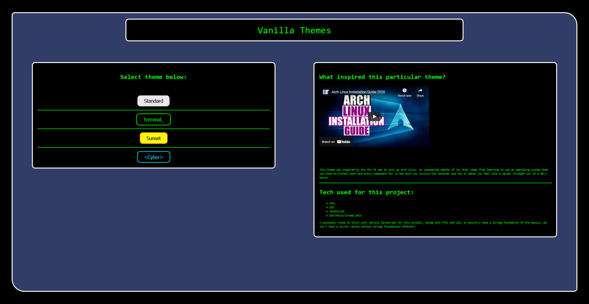
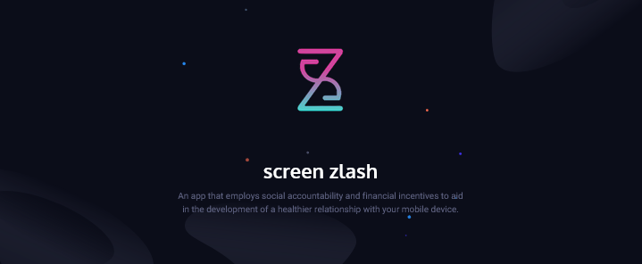
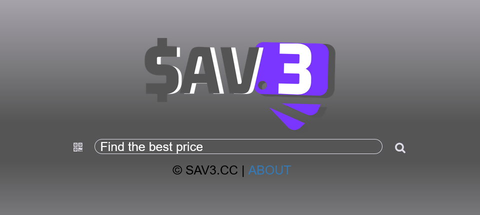

Vanilla Themes

A stand-alone project that showcases my familiarity with the basics of front-end web devlopment by primarily utilizing the three fundamental technologies: HTML/CSS/ JavaScript along with some DOM/Fetch/iFrame APIs mixed in.
Click here to check it out! Be sure to click the Cyber button!
Screen Zlash

A Web page built with the fundaments + bootstrap CSS for a much more responsive design that works well on mobile devices!
It is a landing page for a mobile application for a side project.
Click Here to check it out!
Online Shopping Tool

A group project where my contributions included both front-end and back-end technologies.
This project showcases my introduction to SASS for a nice easy-on-the-eyes interfaces that is located in the 'about' section.
I also was responsible for sorting data in the back-end utilizing Python, XML/JSON data.
Click here to check it out!
About
I am a highly motivated Front-End Developer and I’m ready to put my skills to the test and rise high in my chosen profession. My strengths include quickly picking up new skills, creating easy-on-the-eyes user interfaces, and persevering through any tough problem I face. My skills include front-end technologies such as HTML, CSS, Vanilla JS along with some Python, SQL, Git, and Bootstrap.
I also enjoy tinkering with any tech that I can just ‘dive into’ to best customize and optimize for any use. My hobbies outside of web development include: 3d printing, setting up a media/game servers Raspberry Pi’s, and creating beautiful custom operating system user interfaces via Arch Linux all while having zero prior exposure and plenty of hours of troubleshooting!